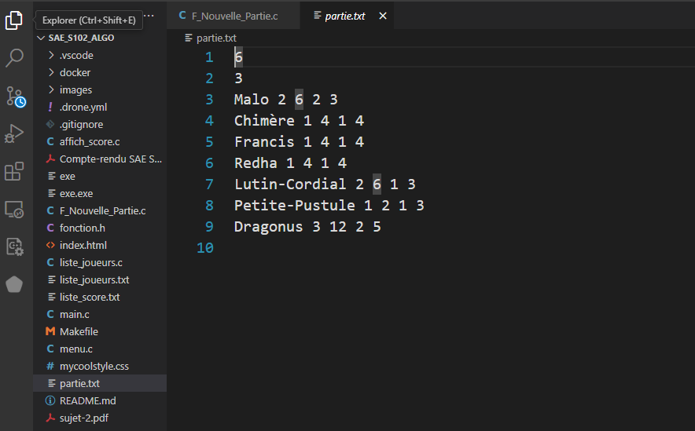
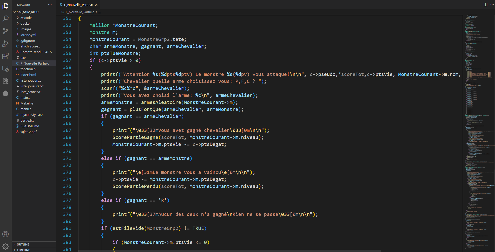

À propos de moi
Je m'appelle Clément Sellier, je suis étudiant en BUT Informatique à Clermont-Ferrand.
J’ai toujours été curieux des choses qui m’étaient inconnues, et cette soif de découverte
m’a naturellement conduit vers le monde fascinant de l’informatique et du numérique.
Je suis également passionné de sport, notamment de skateboard et de musculation. Je cherche
constamment à me dépasser, que ce soit dans le domaine sportif ou dans les autres aspects de
mon quotidien.
Le sport occupe une place centrale dans ma vie : il structure mes journées et m’a permis de
mettre en place une routine solide.
C’est grâce à cela que la discipline et le goût de l’effort se sont ancrés en moi, des
qualités que je mets aujourd’hui au service de mes études, à travers les projets et les
travaux que l’on nous confie.
Je pense avoir été naturellement attiré par l’informatique, un domaine qui exige rigueur,
dévouement et détermination.
Pour moi, un bon informaticien est quelqu’un qui n’a pas peur d’explorer l’inconnu, afin
d’apprendre et de mieux comprendre sa machine.
C’est pourquoi une expérience professionnelle représente une opportunité idéale pour mettre
ces principes en pratique, en étant confronté à des problématiques concrètes.
Ainsi, je compte rechercher une alternance à partir de 2025 dans le domaine de la
cybersécurité, d’une durée de 10 semaines à un rythme de 3 mois, afin d’acquérir des
compétences solides et de l’expérience en lien direct avec ma formation.

Formations
2024-À ce jour
But informatique IUT Clermont-Ferrand (63000)
Formation informatique
2021-2024
Lycée Godefroy de Bouillon, Clermont-Ferrand (63000)
Bac général option Maths/SI
2018-2021
Collège Marcel Bony, Murat le Quaire (63150)
Mes Formations
J’ai suivi un parcours assez classique, aussi bien au collège qu’au lycée, sans avoir d’idée précise sur ce que je voulais faire par la suite. C’est pourquoi j’ai choisi de rester dans une filière générale, afin de ne pas me spécialiser trop tôt et d’explorer différentes matières dans l’espoir de trouver ma voie. Après avoir obtenu mon baccalauréat général, j’ai décidé d’intégrer le BUT Informatique de Clermont-Ferrand.
Qualités
Curieux
"La curiosité est un vilain défaut", c’est ce que tous les parents nous ont au moins dit une fois dans notre vie. En effet, être trop curieux n’est pas toujours vu comme une qualité. Cependant, lorsqu’elle est bien canalisée, la curiosité peut se transformer en un atout indéniable. Je suis moi-même quelqu’un de curieux, cherchant sans cesse à découvrir de nouvelles choses, à trouver des solutions inédites et à résoudre de nouveaux problèmes, afin de mieux comprendre le monde qui m’entoure.
Determiné
Je pratique le skateboard depuis maintenant 7 ans, et j’ai été confronté à de nombreuses occasions à l’envie d’abandonner. En effet, dans une discipline comme celle-ci, on est constamment soumis à la pression et surtout à la peur. C’est pourquoi il est essentiel de se dépasser sans cesse. Pour atteindre ses objectifs, il faut persévérer. Cette qualité est également indispensable en entreprise, car on y fait face à des problèmes qui, parfois, semblent insurmontables. Cependant, l’abandon n’est jamais une option si l’on souhaite réussir.
Pointilleux envers moi-même
Étant dessinateur depuis mon enfance, j’ai pu développer mon côté méticuleux à travers mes dessins. En effet, j’aime que les choses soient bien faites, et en dessinant, je m'assure de vérifier chaque élément : par exemple, leur taille, leur forme ou même leur couleur, jusqu’à ce que tout soit parfait. Je peux mettre cette qualité au service de l’entreprise, car dans la création d’un programme, il est essentiel d’être rigoureux afin d’éviter toute erreur et ainsi produire un code de qualité.
Compétences
HTML
PHP
CSS
Shell
Python
C
C++
Anglais
*Niveau attendu par les professeurs
Expériences
Durant les vacances d'été de ma dernière année de collège, j'ai travaillé pour l'entreprise Bovis Cournon en tant que déménageur/manutentionnaire. Ce travail consistait principalement à déménager des bâtiments entiers, le plus souvent des lycées ou des entreprises privées, afin de déplacer leur matériel vers un autre endroit. La principale difficulté résidait sans doute dans l'aspect physique du travail. En effet, nous devions porter des objets parfois très lourds et encombrants sur de longues distances pour les charger dans les camions de transport. De plus, certains accès étaient particulièrement dangereux pour ce type de travail, notamment les escaliers étroits et escarpés, ce qui compliquait considérablement notre tâche.
J’ai travaillé en tant qu’employé de libre-service et chargé de la mise en rayon à Auchan durant mes vacances d'été. J’étais responsable de la mise en rayon des articles, tels que les boissons, et de leur étiquetage si nécessaire. Ce travail est très important, car il ne faut oublier aucun article pour éviter des problèmes de gestion des stocks. Grâce à cette expérience, j'ai pu développer une certaine minutie dans mon travail, ainsi que la patience nécessaire pour accomplir cette tâche correctement.
Mes projets
Snake
Un projet classique auquel la plupart des développeurs ont été confrontés. Codé en Python, ce projet a été celui qui a initié ma passion pour l'informatique. Il aborde des concepts assez complexes, comme la programmation orientée objet, de manière très simple. J'ai réalisé ce projet seul et en autodidacte, après avoir appris les bases du langage Python. Ce dernier m’a permis d’acquérir des connaissances en développement orienté objet, tant au niveau de la syntaxe que des concepts, ainsi qu’en programmation Python.
Voici le lien vers le code source
Jeu de monstres
Ce jeu a été créé dans le cadre de ma formation, afin de mettre en application nos connaissances en langage C. En binôme, il nous a été demandé de créer un jeu console basé sur le principe du Pierre, Feuille, Ciseaux. Dans ce jeu, nous incarnons un chevalier dont le but est de combattre des monstres, un par un, à travers plusieurs niveaux de difficulté où les ennemis deviennent progressivement plus difficiles à vaincre. Il nous a également été demandé d'utiliser des structures que nous avons abordées lors de nos cours d'algorithmique pour réaliser ce projet.
Pour ce faire, il nous avait été demandé de stocker dans un fichier texte les monstres qui allaient être utilisés dans notre jeu. Sous la forme d'une liste de monstres avec leurs attributs (nom, niveau, points de vie, etc.), nous avons lu cette liste grâce à un programme de lecture de fichier, ce qui nous a permis de récupérer et de stocker les données de notre jeu.


Nous avons ensuite codé le déroulement de la partie, maintenant que les informations sur les monstres étaient stockées. C’est notamment dans cette partie du projet que nous avons pu mettre pleinement à profit ce que nous avons appris en C. À l’aide de boucles, de files ou même de piles, nous étions en mesure de simuler un combat entre un monstre et le chevalier, puis de déterminer rapidement lorsque l'ensemble du niveau était terminé et que les combats étaient opérationnels.
Enfin, dans une dernière partie, nous nous sommes occupés du bon déroulement de la partie et de l’enchaînement des événements.
Les niveaux qui se succèdent, la bonne utilisation des piles et des files, ainsi que le vidage de celles-ci, ont été passés en revue. Nous avons corrigé les erreurs dans le code pour nous assurer que tout le monde pouvait jouer au jeu depuis leur machine à partir du code source.
Grâce à notre travail, nous avons pu produire un jeu console (uniquement jouable dans un terminal) en utilisant les connaissances acquises en cours.
Le plus difficile dans ce projet était que l’algorithmique était une matière que nous trouvions complexe et qui nous posait problème. Cependant, à force d’entraînement, d’échecs et d’essais, nous avons réussi notre objectif et acquis des compétences dans le langage C.
Contacts
Si vous êtes intéressé(e) par mon profil, n'hésitez pas à me contacter en utilisant les coordonnées ci-dessous.